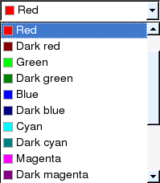

| Home |
The QtColorComboBox class provides a combobox with colors and texts. More...
#include <QtColorComboBox>
Inherits QComboBox.
The QtColorComboBox class provides a combobox with colors and texts.
Colors are inserted with insertColor(), which takes a color, a text, and an optional index position. The combobox can also be populated with a standard set of colors using setStandardColors(). Users can add their own colors if the color dialog is enabled (see setColorDialogEnabled()).
When a color is highlighted (for example when the mouse moves over it after the combobox has been dropped down), the highlighted() signal is emitted. When a color is activated (for example, clicked), the activated() signal is emitted. If the color dialog is enabled and the item clicked is the "More..." item at the end, the color dialog is popped up and if the user chooses a color the activated signal is emitted after the dialog closes.
Use color() to get the color at a certain index position, and currentColor() to get the color that is currently selected.

Constructs a QtColorComboBox with the color dialog disabled. The parent and name arguments are passed to the QComboBox's constructor.
This signal is emitted when the color color has been activated.
Appends the color color with the text name to the combobox.
Returns the color at position index.
This function returns the number of colours in the combobox. (excluding the "More...")
Returns the current color.
See also setCurrentColor().
This signal is emitted when the color color has been highlighted on the popup color grid.
Inserts the color color with the text name at position index.
If index is -1, then color is prepended to the beginning end of the list.
Returns true if the color dialog button is enabled; otherwise returns false.
Enables the color dialog if enabled is true; otherwise disables it.
When the color dialog is enabled, an extra item is available at the bottom of the list of colors in the combobox with the translatable text "More...". Selecting this item will pop up the color dialog, allowing the user to add new colors to the list. The new colors will be called "User color 1", "User color 2", and so on; the names can be changed by translating "User color %1".
See also isColorDialogEnabled() and insertColor().
Sets color to be the current color if color is one of the combobox's colors; otherwise does nothing.
See also currentColor() and insertColor().
Adds the 17 predefined colors from the Qt namespace.
(The names given to the colors, "Black", "White", "Red", etc., are all translatable.)
See also insertColor().
| Copyright © 2009 Nokia Corporation and/or its subsidiary(-ies) | Trademarks | Qt Solutions |